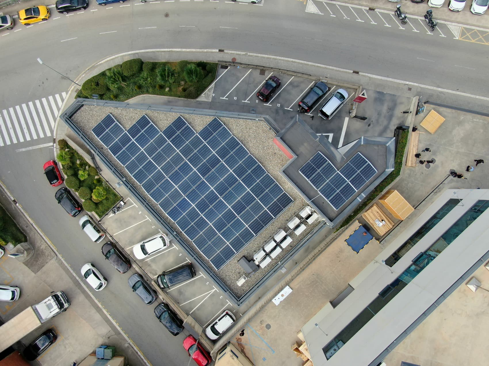

Mesures ambientals aplicades a Granollers
A continuació es mostren algunes de les mesures que l'Ajuntament de Granollers està aplicant per a
millorar la sostenibilitat i la cura de l'entorn.
Mesures principals
- Instal·lació de panells solars en edificis municipals.
- Renaturalització del riu Congost per a millorar la biodiversitat.
- Ampliació dels carrils bici per a fomentar la mobilitat sostenible.
- Millora dels punts de reciclatge en tots els barris.
- Programes educatius sobre sostenibilitat en escoles de Granollers.
Accions prioritàries de l'Ajuntament
- Reduir les emissions de CO₂ en un 30% per a 2030..
- Millorar l'eficiència energètica en edificis municipals.
- Fomentar pràctiques sostenibles en empreses i llars.
- Controlar i reduir les emissions del trànsit urbà.
- Augmentar l'ús d'energies renovables en instal·lacions públiques.
- Instal·lar panells solars en edificis municipals.
- Substituir progressivament energies fòssils per renovables.
- Prioritzar contractes de subministrament elèctric verd.
- Promoure el transport públic i la mobilitat elèctrica.
- Ampliar i optimitzar la xarxa de transport públic.
- Instal·lar punts de recàrrega per a vehicles elèctrics.
- Incentivar l'ús de vehicles no contaminants.
- Protegir les zones verdes i crear nous espais naturals.
- Conservar i mantenir parcs i àrees verdes existents.
- Conservar i mantenir parcs i àrees verdes existents.
- Fomentar la reforestació i la biodiversitat local.
Conceptes clau
- renaturalització
- Procés de recuperació d'espais naturals per a millorar la biodiversitat.
- Mobilitat sostenible
- Ús de transports no contaminants com a bicicletes o vehicles elèctrics.
- Eficiència energètica
- Reducció del consum energètic mitjançant tecnologies més eficients.
Imatges relacionades

Panells solars instal·lats en edificis municipals.